The full lab notebook: each experiment, what it tested, its parameters, and the moving result. All loops play inline.
Every motion experiment starts from one of these inked B&W stills, generated on local SDXL in the locked look (black chisel-marker + grey dry-brush on white cold-press, sumi-e / Vagabond lineage). Lots of white space, so the element to animate is easy to lift out.
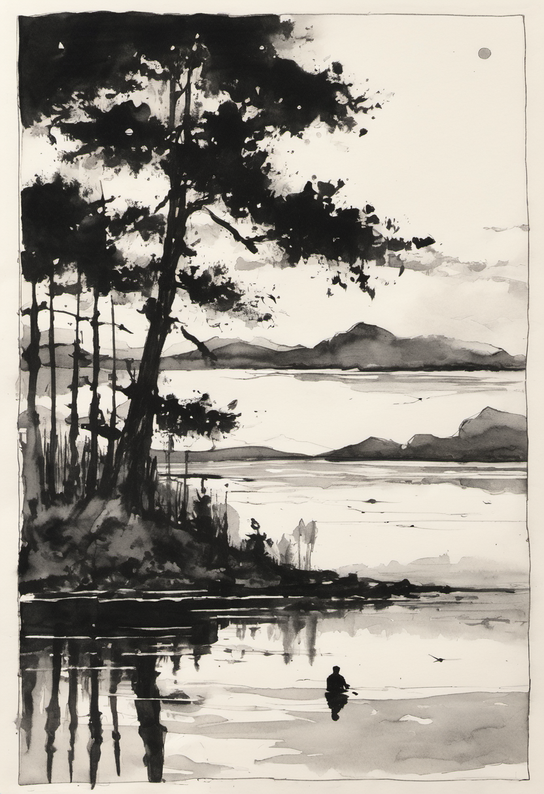
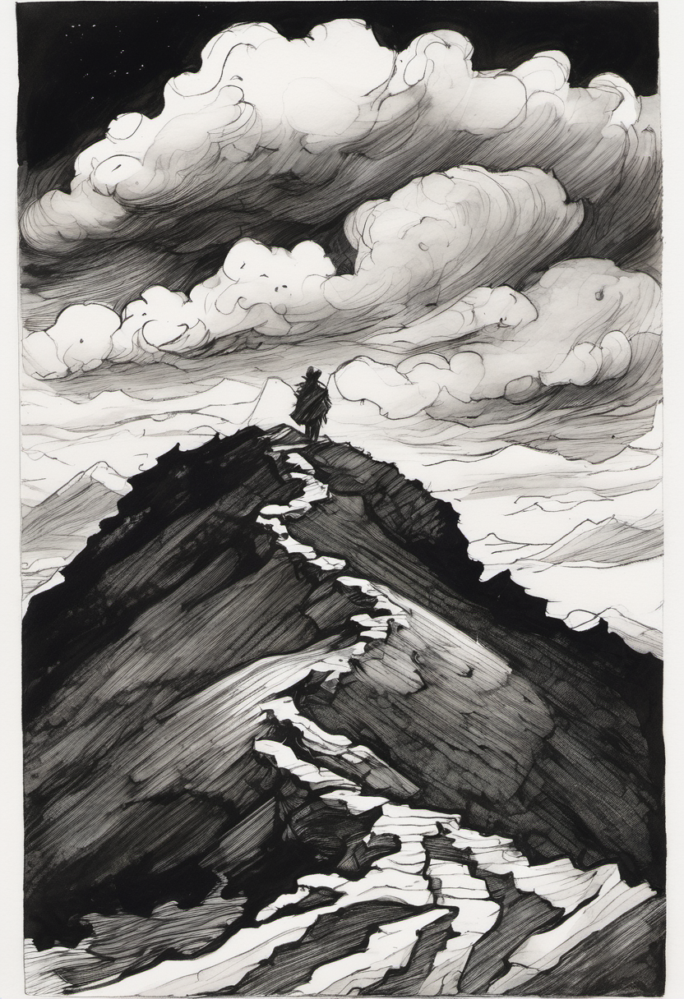
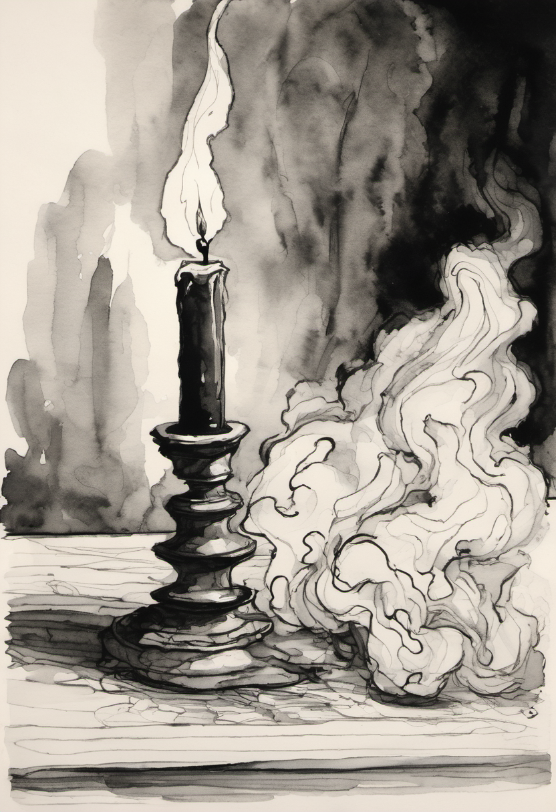
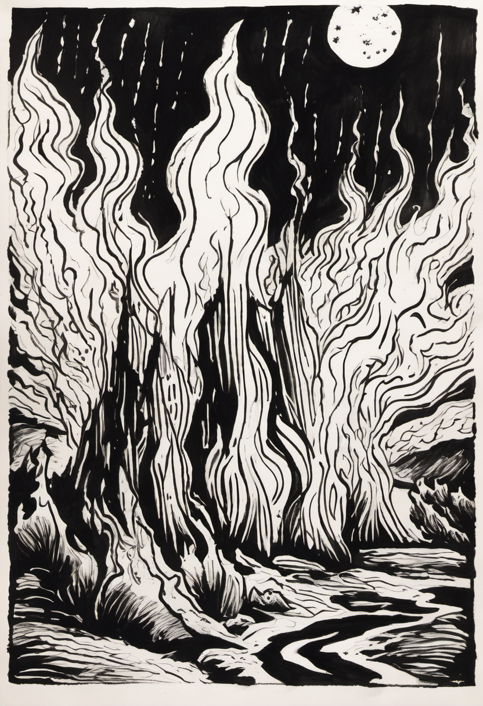
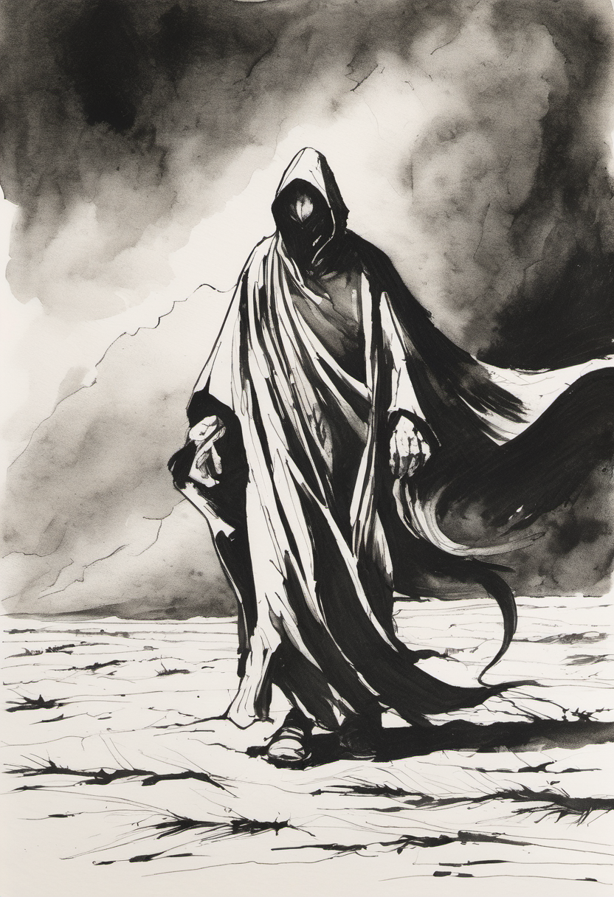
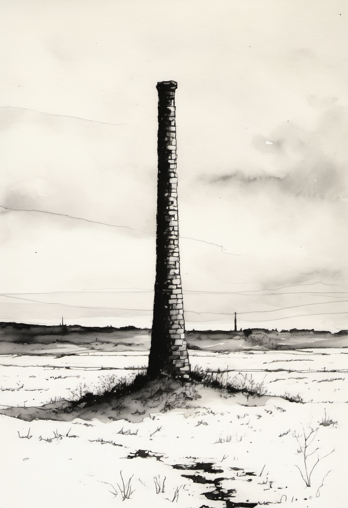
Take one inked plate + a mask + a per-element displacement field; resample the ink under the field. Every temporal term is a whole number of cycles, so the loop is seamless by construction and only the masked element moves.
Traveling sinusoids, mostly vertical bob, amplitude scaled by depth (foreground waves bigger). Mask = bottom 50%.
The lake surface and reflections ripple; the trees and sky hold perfectly still.
Very low-frequency, long-wavelength billow. Mask = top 55%.
The clouds breathe and slide; the dark ridge stays locked.
Turbulent rise, lateral-biased, base-anchored (the candle flame + plume both move, the candlestick is static).
Fast oscillatory lick + lateral curl on the whole woodcut wall of flame; the base is pinned and the tips dance most (the base-anchor weight).
Lateral-biased shimmer on the lower band — wind across the drawn grit.
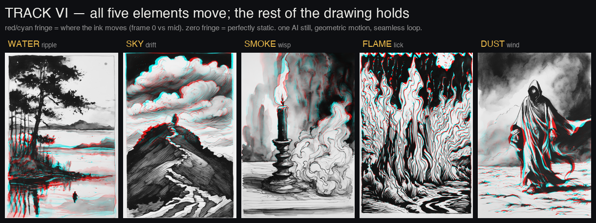
For billowing/topology-changing media there's no stable ink to warp. Headless Mantaflow bakes a sim, renders grayscale-on-white, and a deterministic NPR pass turns it to marker-on-cold-press.
Mantaflow density, puff emission, rendered BW (after fixing the AgX→Standard view transform), then NPR-inked on a paper tooth generated once so it can't boil.
Same path, fire+smoke. The emitter is hidden from render; an upward launch velocity + 110 frames gave the rise.
The first sims rose but were a faint blob. This pass art-directs Mantaflow into a tall billowing plume with delicate tips and true ink-blacks, exposing nine reusable flags on smoke_sim.py. Three variants below; gray (the sim substrate) on the left of each pair, inked on the right.
A single puff rises and clears — good for one-shot smoke that dissipates.
Continuous inflow, rich blacks, loopable — the strongest all-rounder.
dissolve-speed 15 — old smoke fades fast, leaving wispy sumi-e tips.
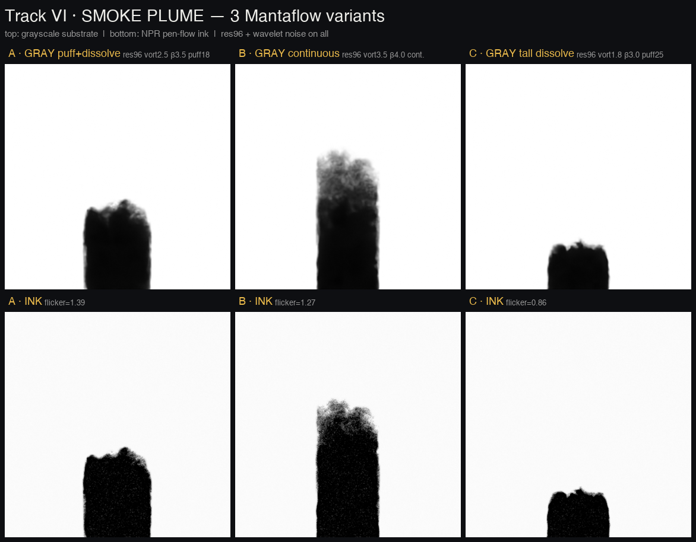
The same Blender smoke through two stylizers. Deterministic NPR reuses one static paper tooth → stable. Per-frame SDXL img2img redraws each frame → it boils.
~10× more boil from the AI restyle, even with a fixed seed. The lesson echoes the warp: AI makes the still; geometry makes the motion.
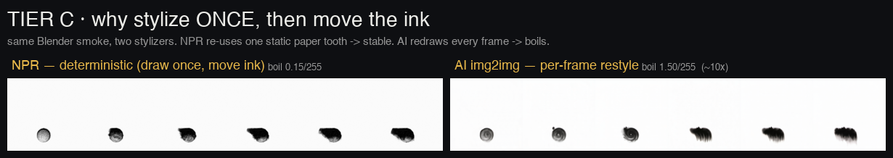
Ink-on-paper compositing is multiply (white passes through, black ink darkens). Separate a moving element, infill the hole, animate it, multiply it back.
Removed the drawn plume, dropped in the simulated smoke. The lesson: the candle plate has a dark ground, so white-paper infill punched a hole and multiply can't show ink on dark — recompositing wants a white ground.
Adding inked smoke into white sky over a chimney — the clean case. Placement of the puffed element is finicky; a continuous-emitter element aligns better.
The 2.5D paper stack needs sheets. Route A cuts a finished drawing along its black lines; Route B generates each sheet. Tested on the sky/ridge scene — the case where soft band-masks bled.
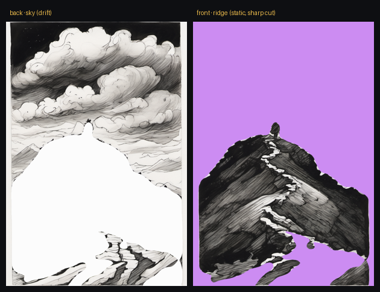
A luminance threshold grabbed 63% (dark hill and dark cloud ink read "dark"). Fix: threshold dark-density — a filled mass vs linework — so the hill survives and the cut lands on the black silhouette.
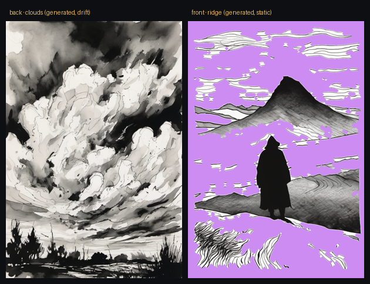
Alpha is clean by construction, but two independent generations don't cohere — the "ridge" prompt drifted into a figure-scene that fights the clouds.
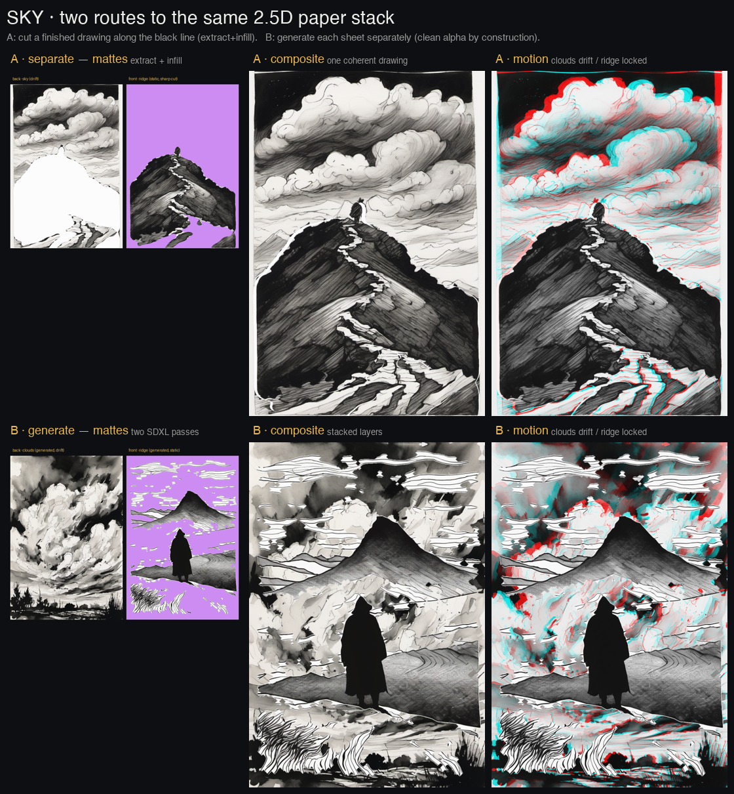
Both weak spots hardened on the proven RunPod FLUX-union ControlNet (network volume recipe) + local SDXL.
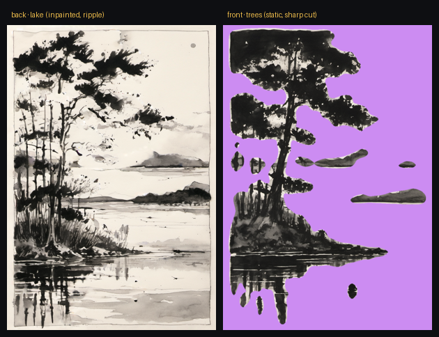
On a dark/structured ground, SDXL inpaint (local, in ink) fills behind the extracted trees with coherent water + far shore — so the trees become a static front sheet over rippling water, not a white hole.
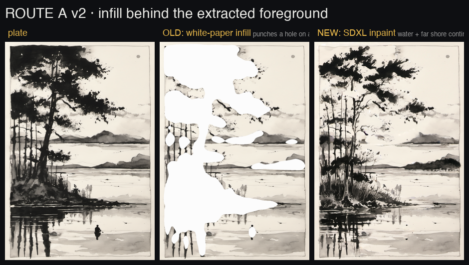
Both layer passes condition on the same authored depth map + same seed, so they register as one scene. The hill landed at 38–39% in every pass. Then re-inked locally with SDXL.
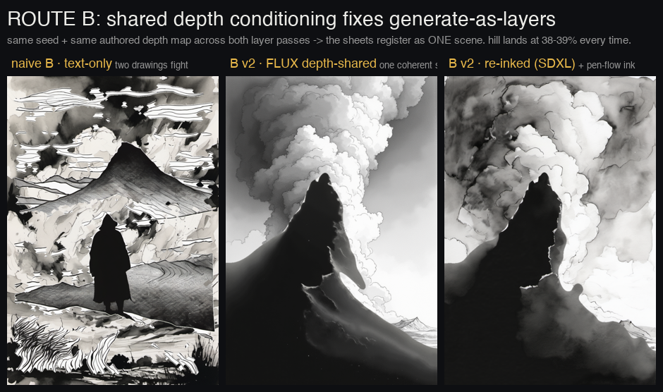
Can a Blender sim's velocity field drive the warp better than a synthetic field? Optical flow (pure numpy, no OpenCV) on the sim's density frames feeds fields.from_flow.
The velocity field deforms the ink along the sim's actual plume shape — more organic — but carries a faint loop seam (cross-fade) and a square-sim-vs-portrait-plate mismatch.
Fixes if pursued: render the sim at the plate's aspect; integrate flow into a periodic field instead of cross-fading.
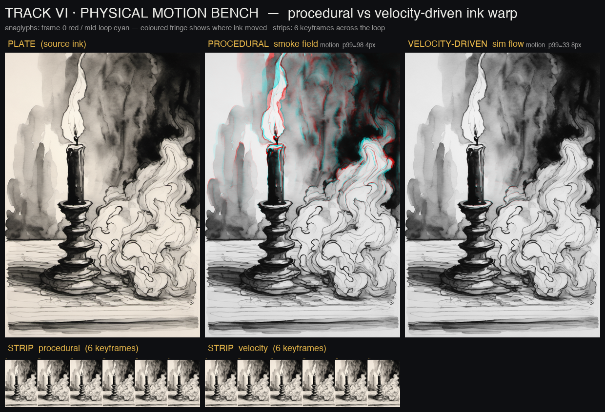